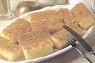

Menú B
BIZCOCHOS BORRACHOS

Preparación:
- Separar las yemas de las claras de huevo.
- Batir a punto de nieve las claras en un recipiente hondo.
- Aparte batir las yemas con 5 cucharadas de azúcar.
- Añadir las yemas batidas a las claras y echar la harina poco a poco.
- Mezclar correctamente hasta que quede una pasta lisa.
- En un molde para bizcochos, verter la mezcla anterior y cocerla a horno moderado.
- Mientras, preparar un almíbar en un puchero pequeño con el resto del azúcar, la copa, la manzanilla y un poco de agua.
- Cuando el bizcocho esté en su punto, dejarlo enfriar, desmoldarlo y cortarlo en cuadrados de unos cuadro cm de lado.
- Mojar los bizcochos en almíbar y espolvorearlos con canela en polvo.
- Disponerlos en una fuente de cristal.